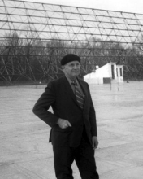

Please note: the AAS Obituaries are temporarily being hosted on this website while their full content is being ingested into the PubPub publishing platform newly adopted by the Bulletin of the American Astronomical Society. When the migration is complete, your existing links will take you to the final, migrated content. Contact peter.williams@aas.org with any questions.
John Daniel Kraus (1910-2004)
John Daniel Kraus, 94, of Delaware, Ohio, director of the Ohio State University "Big Ear" Radio Observatory, physicist, inventor, and environmentalist died 18 July 2004 at his home in Delaware, Ohio. He was born on 28 June 1910 in Ann Arbor, Michigan. He received a Bachelor of Science in 1930, a Master of Science in 1931, and a PhD in physics in 1933 (at 23 years of age), all from the University of Michigan, Ann Arbor. During the 1930s at Michigan, he was involved in physics projects, antenna consulting, and in atomic-particle-accelerator research using the University of Michigan's premier cyclotron.
Throughout the late 1920s and the 1930s, John was an avid radio amateur with call sign W8JK. He was back on the air in the 1970s. In 2001 the amateur radio magazine CQ named him to the inaugural class of its Amateur Radio Hall of Fame. He developed many widely used innovative antennas. The "8JK closely spaced array" and the "corner reflector" were among his early designs. Edwin H. Armstrong wrote John in July 1941 indicating in part, "I have read with interest your article in the Proceedings of the Institute on the corner reflector...Please let me congratulate you on a very fine piece of work." Perhaps John's most famous invention, and a product of his intuitive reasoning process, is the helical antenna, widely used in space communications, on global positioning satellites, and for other applications.
During World War II, John was in Washington, DC as a civilian scientist with the U.S. Navy responsible for "degaussing" the electromagnetic fields of steel ships to make them safe from magnetic mines. He also worked on radar countermeasures at Harvard University's Radio Research Laboratory. He received the U.S. Navy Meritorious Civilian Service Award for his war work. In 1946 he took a faculty position at Ohio State University, becoming professor in 1949, and retiring in 1980 as McDougal Professor Emeritus of Electrical Engineering and Astronomy. Even so, he never retired. He was always working, researching, writing, and seeking new knowledge. He was active and vital to the end.
Early on, John became fascinated by Karl Jansky's discoveries of radio noise from space and the potential to use radio waves rather than visible light to "see" the universe. He maintained contact with radio astronomy pioneer, Grote Reber. John pursued radio-astronomy research in parallel with textbook writing and his OSU teaching responsibilities. By 1953 he was observing with a 96 helix antenna and had produced one of the first maps of the radio sky. This was followed by his design and construction of the innovative, 110-meter, "Big Ear" Radio Telescope - a tiltable, flat reflector joined to a fixed, standing, paraboloidal reflector. Observations began in the mid-1960s. Interspersed with this work were radio observations of Jupiter, Mars, and Venus as well as of the ionized trails of the Sputniks and U.S. satellites.
John and his radio astronomy team discovered some of the most distant known objects at the edge of the universe and produced one of the most complete surveys of the radio sky. As he stated, "The radio sky is no carbon copy of the visible; it is a new and different firmament." He was closely identified with efforts and activities related to the Search for Extraterrestrial Intelligence or SETI. He edited and published the first magazine on the subject called Cosmic Search. The now famous "WOW!" signal, of possible extraterrestrial origin, was detected by "Big Ear" in 1977.
He was the author of hundreds of technical articles and the holder of many patents. John was a dedicated educator and inspiring teacher, renown for providing plain English solutions to complicated problems. He was thesis advisor to 58 PhD and Master's candidates. His textbooks made complex subjects accessible to many readers. They have been widely used throughout the world and include "Antennas" (McGraw-Hill: 1950, 1988, 2002) and "Electromagnetics" (McGraw-Hill: 1953, 1973, 1984, 1992, 1999) and "Radio Astronomy" (McGraw-Hill: 1966; Cygnus-Quasar: 1986). They have appeared in Chinese, Japanese, Korean, Spanish, Russian, and Portuguese. He also wrote popular books, including the autobiographical "Big Ear" and "Big Ear Two" (Cygnus-Quasar: 1976, 1995), and the instructional "Our Cosmic Universe" (Cygnus-Quasar: 1980).
His professional memberships included the American Astronomical Society, election to the National Academy of Engineering (1972), and Fellow of the Institute of Electrical and Electronic Engineers. He received the Centennial Medal (1984), the Edison Medal (1985), and the Heinrich Hertz Medal (1990) from the IEEE. The Antenna and Propagation Society of IEEE twice awarded him its Distinguished Achievement Award, the last in 2003. He was awarded the Sullivant Medal (1970) from the Ohio State University and the Outstanding Achievement Award (1981) from the University of Michigan.
John and his wife, Alice Nelson Kraus, whom he married in 1941, were committed environmentalists. Alice and he donated the 80-acre Kraus Wilderness Preserve to the Ohio Wesleyan University in 1976. They also endowed scholarships to enhance environmental learning for students at Ohio Wesleyan and OSU. In addition, John was a passionate advocate of metrification in the USA. Predeceased in 2002 by his beloved wife, he is survived by two sons, John D. Kraus, Jr., and Nelson H. Kraus, and five grandchildren. His professional and personal papers are housed at the National Radio Astronomy Observatory archives in Charlottesville, Virginia.
John was viewed by many as a last living link to many of the astonishing scientific discoveries of the 20th century. He valued an open mind and direct physical insights and was of a by-gone era of hands-on invention, empirical testing, and observational research. Yet, he commanded an insightful grasp of the theory, which he could translate into thought provoking learning experiences for students and working engineers alike.
In his epilogue to "Big Ear", John said, "I haven't discovered the ultimate truths of the universe but I have experienced the thrill and excitement of playing a small part in the adventure of exploring the astounding, baffling, stranger-than-fiction cosmos in which we dwell."
Obituary written by: John D. Kraus, Jr. (University of New Hampshire), Ronald J. Marhefka (Ohio State University)
BAAS Citation: BAAS, 2005, 37, 1551
SAO/NASA ADS Bibcode: 2005BAAS...37.1551K